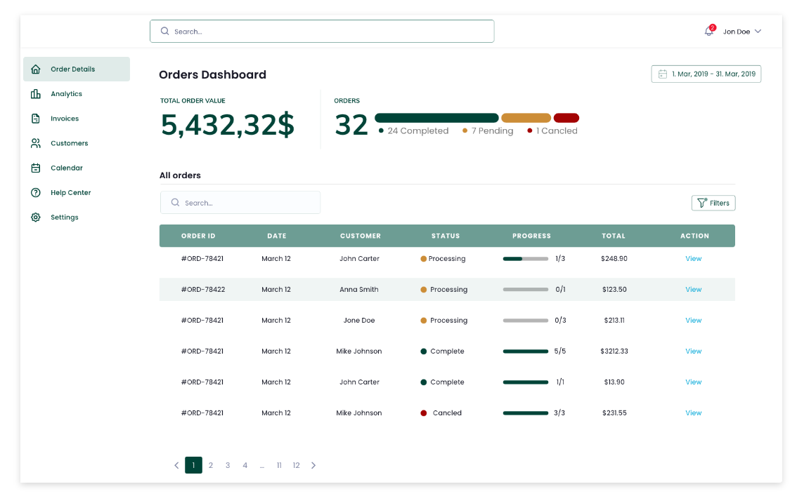

The goal of this project was to improve the user experience of an existing mobile interface by reducing friction in a key user flow.
During analysis, I identified several usability issues:
Funnel analysis revealed a significant drop-off during the purchase journey, with users not progressing beyond the product page.
Further analysis showed that a sticky element was blocking key content and interfering with the user’s ability to take action.
This change improved the flow and allowed more users to proceed through the purchase journey.

The primary user is a mobile user who wants to complete a task quickly, with minimal effort and without overthinking.
Reduce friction in the user flow
Improve clarity of the interface
Make primary actions immediately visible
I focused on simplifying the layout, improving visual hierarchy, and removing obstructive elements.
The goal was to remove visual obstruction and create a clear, uninterrupted path to the primary action.

Analytics data showed a clear drop-off in the purchase journey before the redesign, with users not progressing beyond the product page.
After removing the sticky element and simplifying the layout, the data indicates a noticeable increase in user engagement and progression through the flow.
While multiple factors can influence performance, the improvement aligns with the UX changes made, suggesting that reducing visual obstruction and cognitive load had a direct positive impact on user behavior.

The goal of this project was to design a clear and efficient dashboard for managing orders in a data-heavy environment.
Existing order management interfaces are often overloaded with information, making it difficult for users to quickly understand order status and take action. This leads to slower workflows and increased cognitive load.
Admin users and operations teams who need to monitor, review, and manage multiple orders efficiently on a daily basis.
Improve readability of large datasets
Make order status immediately understandable
Enable faster decision-making and actions
I focused on simplifying the table structure, improving visual hierarchy, and highlighting key information such as status, progress, and actions.
I designed a clean dashboard with a structured data table that prioritizes essential information: order ID, customer, status, progress, and total value. Status indicators and progress bars were used to make order states quickly scannable, while actions were made easily accessible to reduce the number of steps needed to manage orders.
The result is a more intuitive and efficient interface that allows users to quickly scan, understand, and act on orders with minimal effort.
In data-heavy interfaces, clarity and hierarchy are more important than showing all available information at once.
The goal of this project was to redesign a travel app experience in a way that feels modern, polished, and more alive. The client wanted to avoid anything that felt childish or overly playful, and instead focus on a cleaner interface with subtle animation and a stronger sense of how the product would actually work in real use.
I focused the concept around three main screens: the opening screen, the main discovery experience, and the booking screen. Rather than designing too many disconnected views, I kept the flow intentionally tight so each screen had a clear role and the overall journey felt easy to follow.
I built the redesign around clarity, structure, and motion. The visual direction uses strong imagery, clean typography, and simple layout decisions to make the interface feel closer to a contemporary mobile product. Animation was considered as part of the experience so the screens would not only look better, but also feel more natural and interactive.
The final concept presents a more refined and user-friendly travel app that feels easier to navigate and more realistic as a product. By reducing the experience to the most important screens, I was able to create a clearer flow, stronger consistency, and a design that better reflects the style of modern apps.

The intention was to make the experience feel simpler and more premium. Instead of filling the interface with too many features, I focused on the parts that matter most to the user: understanding the product quickly, browsing without confusion, and moving smoothly toward booking.
Each screen was designed to do one job well. The first screen introduces the experience, the main screen supports exploration and decision-making, and the booking screen brings everything together in a way that feels clear and direct.
The result is a cleaner and more structured concept with stronger consistency across the flow. It feels more human, more current, and more believable as a real mobile app experience.

The next stage would be refining the transitions between screens, testing how users move through the flow, and pushing the interaction design further so the concept feels even closer to a finished product.
This project was mainly about restraint — choosing the right screens, simplifying the journey, and making the design feel contemporary without overcomplicating it. The final result communicates the idea more clearly and feels much closer to how a real app should behave.


Tiskly is a web platform concept that lets users upload and preview their designs directly on 3D packaging models before production, making the design-to-print process more visual, intuitive, and error-free.
This project strengthened my ability to design tools that balance creativity and usability. I focused on making complex interactions feel simple, while keeping the experience visually clean and intuitive.

Modepack is a B2B sales analytics platform designed to centralise performance data and make it immediately actionable. The dashboard gives sales teams a single, focused view of their most critical metrics — from net revenue to distribution stage progress.
Motion plays a key role in enhancing usability. Micro-interactions provide feedback when users interact with elements. Animated charts help users understand changes over time more intuitively.
Designing a dashboard means making hard decisions about what to show and what to remove. This project pushed me to prioritise ruthlessly — every element had to earn its place.